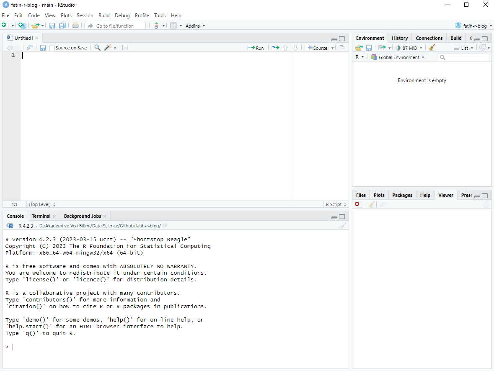

Hello everyone! For my first post on my blog, I would like to make an introduction about R. Before we start coding with R, it’s not a bad idea to know a little about this program and learn what we can do. I will try to answer questions such as why do we need R, how can I install R on my computer, what are the useful resources about R. So, let’s get started.
What is R?

R is a programming language and open-source software environment specifically designed for statistical computing and data analysis. It was created by Ross Ihaka and Robert Gentleman at the University of Auckland, New Zealand, in the early 1990s. R is widely used by statisticians, data analysts, researchers, and data scientists to manipulate, visualize, and analyze data.
Key features and characteristics of R programming include:
Statistical Analysis: R provides a wide range of statistical functions and libraries that enable users to perform various statistical analyses, including regression, hypothesis testing, clustering, and more.
Data Visualization: R offers powerful data visualization capabilities through packages like ggplot2, lattice, and base graphics. These packages allow users to create a wide variety of plots and charts to visualize their data.
Data Manipulation: R provides functions and libraries for cleaning, transforming, and manipulating data. The dplyr and tidyr packages are popular choices for data manipulation tasks.
Extensibility: Users can create and share their own functions, packages, and extensions, which contributes to the vibrant and active R community. This extensibility allows R to be adapted to various domains and applications.
Data Import and Export: R supports reading and writing data in various formats, including CSV, Excel, databases, and more. This flexibility makes it easy to work with data from different sources.
Interactive Environment: R provides an interactive environment where users can execute commands, scripts, and analyses step by step. This is particularly useful for exploring data and experimenting with different approaches.
Community and Packages: The R community has developed a vast ecosystem of packages that extend R’s functionality. CRAN (Comprehensive R Archive Network) is the central repository for R packages, where users can find and install packages for various tasks.
Scripting and Programming: R is a full-fledged programming language with support for control structures, loops, functions, and other programming constructs. This makes it suitable for both simple data analysis tasks and complex data science projects.
Open Source: R is released under an open-source license, which means that anyone can use, modify, and distribute the software. This openness has contributed to the growth and popularity of R in the data science community.
R is commonly used in academia, research, and industries such as finance, healthcare, marketing, and more. Its flexibility, extensive packages, and active community support make it a valuable tool for a wide range of data-related tasks.
Why Should I Use R?
There are several compelling reasons to consider using R for your data analysis, statistical computing, and programming needs. Here are some key benefits of using R:
Statistical Analysis: R was specifically designed for statistical analysis and provides a wide range of statistical functions, algorithms, and libraries. It’s an excellent choice for conducting complex statistical analyses, hypothesis testing, regression modeling, and more.
Data Visualization: R offers powerful data visualization capabilities through packages like ggplot2, which allow you to create customized and publication-quality visualizations. Visualizing data is crucial for understanding patterns, trends, and relationships.
Rich Ecosystem of Packages: R has a vibrant and active community that has developed thousands of packages to extend its functionality. These packages cover various domains, from machine learning and data manipulation to text analysis and bioinformatics.
Reproducibility: R promotes reproducible research by allowing you to write scripts that document your data analysis process step by step. This makes it easier to share your work with others and reproduce your results.
Community and Resources: R has a large and supportive community of users and experts who share their knowledge through forums, blogs, and tutorials. This community support can be invaluable when you encounter challenges.
Open Source: R is open-source software, meaning it’s free to use and open for anyone to modify and contribute to. This accessibility has led to its widespread adoption across academia, research, and industries.
Flexibility: R is a versatile programming language that supports both interactive analysis and script-based programming. It’s well-suited for a wide range of tasks, from exploratory data analysis to building complex data science models.
Integration with Other Tools: R can be integrated with other tools and platforms, such as databases, big data frameworks (like Hadoop and Spark), and APIs, allowing you to work with data from various sources.
Data Manipulation: Packages like dplyr and tidyr provide powerful tools for efficiently cleaning, transforming, and reshaping data, making data preparation easier and more efficient.
Academic and Research Use: R is widely used in academia and research, making it a valuable skill for students, researchers, and professionals in fields such as statistics, social sciences, and natural sciences.
Data Science and Machine Learning: R has a strong presence in the data science and machine learning communities. Packages like caret, randomForest, and xgboost provide tools for building predictive models.
Comprehensive Documentation: R provides comprehensive documentation and help resources, including function documentation, manuals, and online guides.
Ultimately, the decision to use R depends on your specific needs, your familiarity with the language, and the types of analyses and projects you’re involved in. If you’re working with data analysis, statistics, or data science, R can be a powerful tool that empowers you to explore, analyze, and visualize data effectively.
Useful Resources for R Programming
There are numerous useful resources available for learning and mastering R programming. Whether you’re a beginner or an experienced user, these resources can help you enhance your R skills. My intention is to share resources that I think are useful and some of which I use myself, rather than advertising some people or organizations. Here’s a list of some valuable R programming resources:
Online Courses and Tutorials:
Coursera: Offers a variety of R programming courses, including “R Programming” by Johns Hopkins University.
edX: Provides courses like “Introduction to R for Data Science” by Microsoft.
DataCamp: Offers interactive R tutorials and courses for all skill levels.
RStudio Education: Provides free and interactive tutorials on using R and RStudio.
Books:
“R for Data Science” by Hadley Wickham, Mine Çetinkaya-Rundel and Garrett Grolemund: A comprehensive guide to using R for data analysis and visualization.
“Advanced R” by Hadley Wickham: Focuses on more advanced programming concepts and techniques in R.
“R Graphics Cookbook” by Winston Chang: A guide to creating various types of visualizations using R.
“Big Book of R”is an open source web page created by Oscar Baruffa. The page functions as an easy-to-navigate, one-stop shop by categorizing books on many topics prepared within the R programming language.
Online Communities and Forums:
Stack Overflow: A popular Q&A platform where you can ask and answer R programming-related questions.
RStudio Community: RStudio’s official forum for discussing R and RStudio-related topics.
Reddit: The r/rprogramming and r/rstats subreddits are great places for discussions and sharing R resources.
Blogs and Websites:
R-bloggers: Aggregates blog posts from various R bloggers, covering a wide range of topics.
RStudio Blog: The official blog of RStudio, featuring articles and tutorials on R and RStudio.
DataCamp Community Blog: DataCamp is an online learning platform, and its community blog features numerous tutorials and articles on R programming, data science, and related topics.
Tidyverse Blog: If you’re a fan of the tidyverse packages (e.g., dplyr, ggplot2), you’ll find useful tips and updates on their blog.
Github : GitHub is a web-based platform for version control and collaboration that is widely used by developers and teams for managing and sharing source code and other project-related files. It provides a range of features and tools for software development, including version control, code hosting, collaboration, issue tracking, pull requests, wiki and documentation, integration, community and social features. GitHub is widely used by both individual developers and large organizations for open-source and closed-source projects alike. It has become a central hub for software development, fostering collaboration and code sharing within the global developer community.
WarningPlease keep in mind that the availability and popularity of blogs can change, so it’s a good idea to explore these websites and also look for any new blogs or resources that may have emerged since my last update. Additionally, consider following R-related discussions and communities on social media platforms and forums like Stack Overflow for the latest information and discussions related to R programming.
Packages and Documentation:
CRAN (Comprehensive R Archive Network): The central repository for R packages. You can find packages for various tasks and their documentation here.
RDocumentation: Offers searchable documentation for R packages.
TipRemember that learning R programming is an ongoing process, so feel free to explore multiple resources and tailor your learning approach to your needs and interests. Apart from these, you can find many channels, communities or people to follow on YouTube and social media. Of course, artificial intelligence-supported chat engines such as chatGPT and Google Bard, which have become popular recently, are also very useful resources.
Installing R on your machine
In order to install R and RStudio on your computer, follow these steps:
Installing R:
Download R: Visit the official R website and select a CRAN mirror near you.
Choose Your Operating System: Click on the appropriate link for your operating system (Windows, macOS, or Linux).
For Windows: Download the “base” distribution.
For macOS: Download the “pkg” file.
For Linux: Follow the instructions for your specific distribution (e.g., Ubuntu, Debian, CentOS) provided on the CRAN website.
Install R:
For Windows: Run the downloaded installer and follow the installation instructions.
For macOS: Open the downloaded .pkg file and follow the installation instructions.
For Linux: Follow the installation instructions for your specific Linux distribution.
R has now been sucessfully installed on your Windows OS. Open the R GUI to start writing R codes.
Installing RStudio:
Download RStudio: Visit the official RStudio website RStudio website and select the appropriate version of RStudio Desktop for your operating system (Windows, macOS, or Linux).
Install RStudio:
For Windows: Run the downloaded installer and follow the installation instructions.
For macOS: Open the downloaded .dmg file and drag the RStudio application to your Applications folder.
For Linux: Follow the installation instructions for your specific Linux distribution.
RStudio is now successfully installed on your computer.

Apart from R and Rstudio, you may also need to install Rtools. Rtools is a collection of software tools that are essential for building and compiling packages in the R programming language on Windows operating systems. Here are several reasons why you might need Rtools:
Package Development: If you plan to develop R packages, you will need Rtools to compile and build those packages. R packages often contain C, C++, or Fortran code, which needs to be compiled into binary form to work with R.
Installing Binary Packages: Some R packages are only available in binary form on CRAN (Comprehensive R Archive Network). If you want to install these packages, you may need Rtools to help with package installation and compilation.
Using devtools: If you use the
devtoolspackage in R to develop or install packages from sources (e.g., GitHub repositories), Rtools is often required for the compilation of code.External Dependencies: Certain R packages rely on external libraries and tools that are included in Rtools. Without Rtools, these packages may not be able to function correctly.
Custom Code: If you write custom R code that relies on compiled code in C, C++, or Fortran, you will need Rtools to compile and link your custom code with R.
Creating RMarkdown Documents: If you use RMarkdown to create documents that involve code chunks needing compilation, Rtools is required to compile these documents into their final format, such as PDF or HTML.
Data Analysis with Specific Packages: Some specialized packages in R, especially those dealing with high-performance computing or specific domains, may require Rtools as a prerequisite.
Building from Source: If you want to install R itself from source code rather than using a pre-built binary version, Rtools is necessary to compile and build R from source.
In summary, Rtools is crucial for anyone working with R on Windows who intends to compile code, develop packages, or work with packages that rely on compiled code. It provides the necessary toolchain and dependencies for these tasks, ensuring that R functions correctly with code that needs to be compiled.
Installing RTools
Download R Tools: Visit RTools website and download the RTools installer.
After downloading has completed run the installer. Select the default options everywhere.